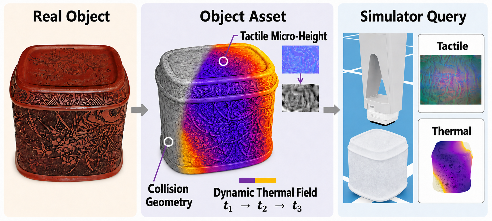
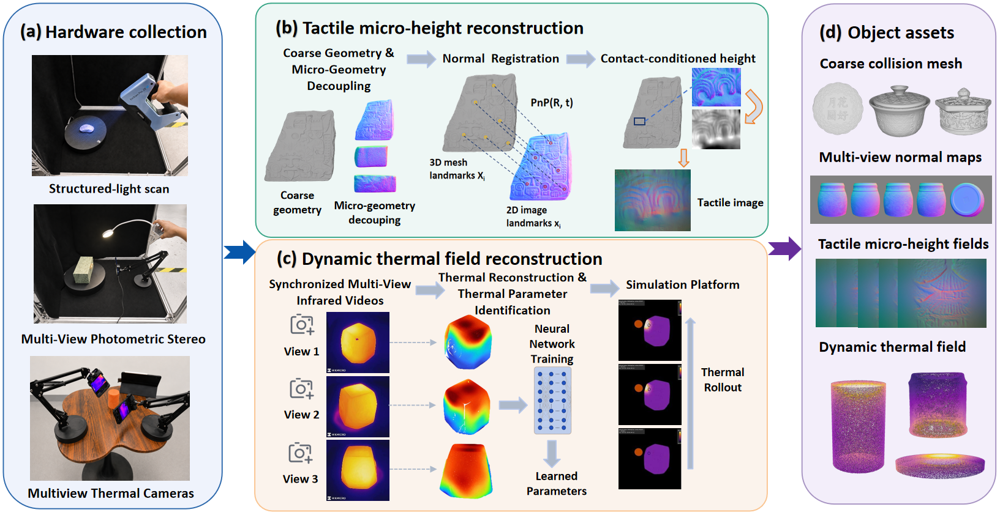
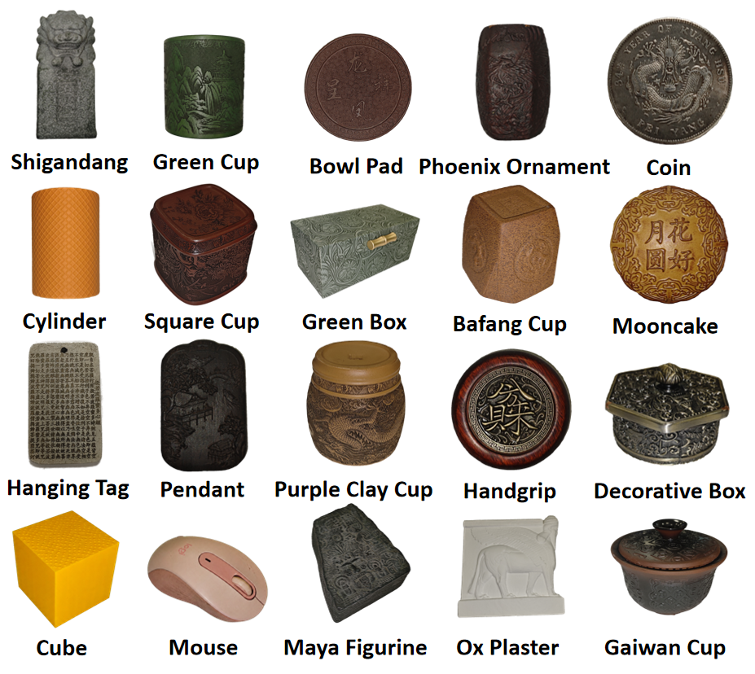
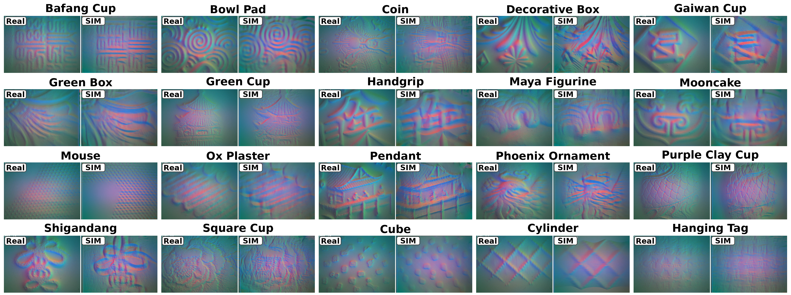
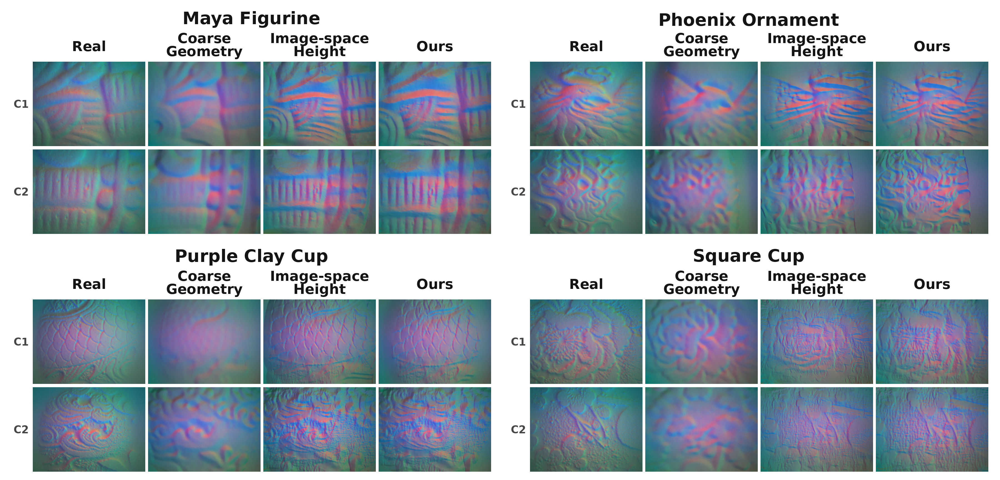
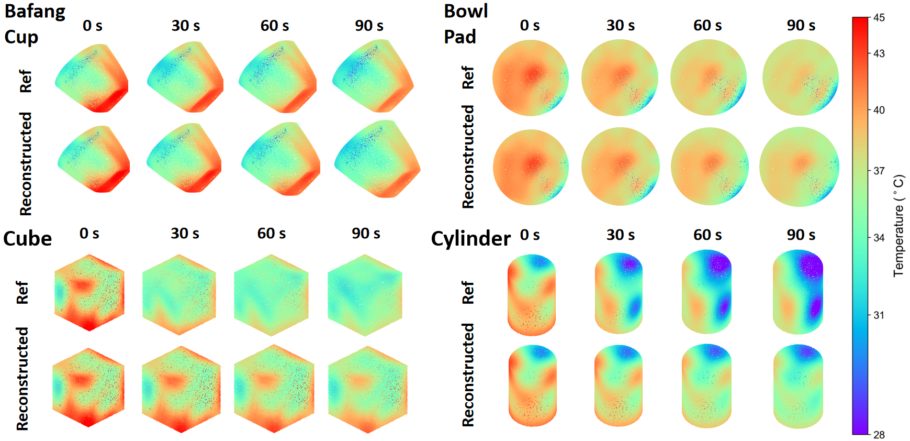
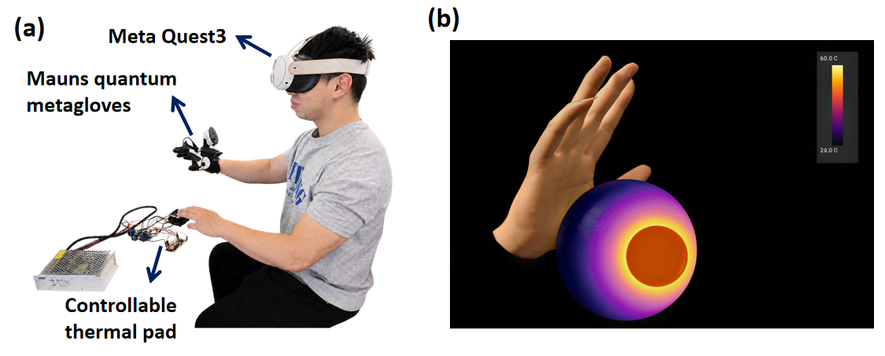

TouchTherm converts real objects into reusable multimodal simulation assets by combining coarse collision geometry, registered tactile micro-height fields, and an object-specific dynamic thermal field.
Robotic simulation and virtual reality increasingly require object assets that represent not only visual geometry, but also the physical cues underlying tactile and thermal interaction. Existing 3D reconstruction pipelines largely focus on object-scale geometry and appearance, while contact-scale surface structure and transient temperature dynamics remain difficult to represent.
TouchTherm constructs simulation-ready visuo-tactile-thermal object assets from real-world objects. A coarse metric mesh is augmented with registered tangent-space micro-height fields for optical tactile rendering, while synchronized multiview infrared observations are used to reconstruct a physics-regularized dynamic thermal field. These representations are integrated into a unified object asset for tactile rendering and spatiotemporal temperature queries.
Across 20 objects, the reconstructed assets preserve contact-relevant surface structure, achieve held-out thermal surface MAEs of 0.465 °C at 30 s and 0.592 °C at 45 s, improve synthetic-to-real tactile object recognition, and support spatially and temporally varying thermal feedback in VR.
A unified object-level representation for visual geometry, tactile micro-geometry, and dynamic surface temperature.
Registered visual geometry, tactile micro-height fields, and dynamic thermal fields within a shared object frame.
Contact-conditioned optical tactile rendering from reconstructed micro-height fields while preserving a coarse collision mesh.
Object-specific surface-temperature dynamics reconstructed from multiview infrared cooling observations.
Evaluation on 20 objects together with synthetic-to-real tactile recognition and wearable thermal feedback in VR.
The acquisition streams are registered to a common object frame, where tactile micro-geometry and dynamic thermal fields are reconstructed in two complementary branches.
Structured-light scanning provides the metric object mesh used for visual rendering and coarse collision geometry.
Photometric-stereo normal maps are registered to the mesh and converted into local tangent-space micro-height fields for tactile rendering.
Multiview infrared cooling observations are fused on the surface and used to identify object-specific thermal dynamics for runtime rollout.

The collection spans flat, curved, cylindrical, and free-form geometries together with smooth, granular, embossed, and anisotropic surface structures.

We evaluate tactile appearance, dynamic thermal prediction, and the downstream utility of the reconstructed multimodal assets.
Across 20 objects, matched real and simulated GelSight observations preserve dominant surface structures and contact-scale patterns beyond what is available from coarse geometry alone.
The proposed PnP-based metric surface sampling and tangent-space reconstruction also achieves the strongest performance in the tactile ablation.
The reconstructed temperature fields preserve both global cooling behavior and spatial temperature patterns over held-out future frames.
Surface MAE remains below 0.6 °C at the reported 30 s and 45 s prediction horizons.



Beyond reconstruction quality, we evaluate whether the assets provide useful signals for perception and immersive interaction.
A ResNet-18 trained only on simulated GelSight observations transfers more effectively to real tactile images when using TouchTherm micro-geometry than coarse geometry alone.
A wearable thermal-feedback platform demonstrates spatially and temporally varying thermal cues reconstructed from the object-level dynamic thermal field.

Code, reconstructed object assets, and the simulation pipeline will be released upon acceptance.